配装工作台 · 第五轮验收报告
项目：eft-interactive-map ｜ 参考站：db4tarkov.com/preset ｜ 参考素材：D:\personal\trae\02-塔科夫\ui图标 ｜ 日期：2026-10-20
结论：第五轮八大项全部落地，两项最终检查已完成：
① 商人头像许可复核后全部下架，替换为项目内自绘中性 SVG，manifest 记录核查过程与下线清单；
② 关键截图已集中到 docs/r5-shots/key/，与 docs/r5-refs/ 的参考图逐项并排对照（第 9 章）。
全量回归 647 passed / 1 skipped，地图、路线、定位、搜索、任务、设置均无改动。
本轮为增量修改：未重写 app.js，保留第四轮的槽位驱动、冲突校验、 物品数据、列宽持久化、本地资源与地图功能。运行期无任何网络请求，断网可完整使用。 枪械预设选择与部分价格功能仍未接入，本报告只针对已明确约定的功能做验收，不代表完整复刻已结束。
交付顺序对照（按用户第八节）
| 步骤 | 要求 | 状态 | 证据 |
|---|---|---|---|
| 一 | 扫描 ui图标，给出参考图映射清单 | 完成 | 本报告第 1 节 |
| 二 | 右侧各类别样式 + 护甲板安装布局 | 完成 | 第 5、6 节 + 截图 02–14 |
| 三 | 头部附件槽左置 + 手枪/近战分离 | 完成 | 第 7、8 节 + 截图 07/08/09 |
| 四 | 最右图标化获取方式 + 罗马数字 + 悬停浮窗 + 图标授权与打包 | 完成 | 第 2、3 节 + 截图 15/21 |
| 五 | 同分辨率截图 + 浏览器交互测试 + 回归结果 | 完成 | 第 9、10 节 |
1. 参考图盘点与映射清单
先完整扫描 ui图标 及其子目录（根目录 9 张、clean 224 张、src 47 张、头盔防护部位图 8 张、
防弹衣防弹胸挂防护部位图 7 张），逐张读取后再动手。下列为与本轮界面直接相关的 9 张参考图：
| 参考图文件 | 尺寸 | 内容判断 | 对应界面区域 | 实现组件 |
|---|---|---|---|---|
| 右侧装备列表样式-护甲.png | 1308×607 | 护甲表：Mov/Turn/Erg、Front/Back/Left/Right 四个板位、Class、Durability、Weight、Price、材质、毁损、有效耐久、防护区域、钝击、获取方式 | 右侧候选表（护甲） | gearColumns armor 分支 17 列 + srcCol；plateCol()、renderPlateCell |
| 右侧装备列表样式-弹挂.png | 1296×670 | 胸挂表：同样四板位列（装甲弹挂有真实板位，普通弹挂显示不可用）+ 容量/槽位 | 右侧候选表（胸挂） | gearColumns rig 分支 |
| 右侧装备列表样式-头盔.png | 1294×404 | 头盔表：有护甲属性，没有四个板位列 | 右侧候选表（头盔） | gearColumns helmet 分支 |
| 右侧装备列表样式-耳机.png | 1298×550 | 耳机表：Distance / Ambient / Dry Volume / Resonance 四参数 | 右侧候选表（耳机） | hpCol() 四列 |
| 右侧装备列表样式-背包.png | 1289×747 | 背包表：占用格、容量、仅允许、排除物品、槽位 | 右侧候选表（背包） | gearColumns backpack 分支 |
| 右侧装备列表样式-眼部.png | 1306×288 | 眼镜薄表：等级 / 减益 / 钝击 | 右侧候选表（眼镜） | gearColumns glasses 分支 |
| 右侧装备列表样式-面部.png | 1312×554 | 护面表：减益 + 互斥件数 | 右侧候选表（护面） | gearColumns face 分支 |
| 头盔配件栏位范例.png | 508×518 | 头盔卡片 + 附件槽在卡片左侧竖排，固定内衬用虚线筹码 | 左侧装备工作区（头部） | renderGearFigure 的 .lw-side-row + renderGearTree(…, "side") |
| 配装参考布局.png | 504×448 | 左栏整体比例与卡片位置（主武器 1/2、手枪、近战、护甲、弹挂、背包等） | 左侧卡片板 | LW_BOARD 7 轨道 × 11 行网格、--lw-side-w: min(504px, 30vw) |
子目录用途说明
| 目录 | 数量 | 用途 | 本项目使用情况 |
|---|---|---|---|
| clean/ | 224 | 抠好的钥匙 / 物资 / 容器图标 | 既有地图图标来源，本轮未改动 |
| src/ | 47 | 原始截图与素材 | 仅参考，不打包 |
| 头盔防护部位图/ | 8 | 头部防护部位组合图 | 既有 assets/icons/zones 来源 |
| 防弹衣防弹胸挂防护部位图/ | 7 | 躯干防护部位组合图 | 既有 assets/icons/zones 来源 |
2. 获取方式列：最右 + 图标化
2.1 位置与结构
所有类别的列集统一收口为：名称 → 冲突 → 类别专属列 → 重量 → 价格 → 获取方式（最右最后一列）。
代码里固定由 cols.push(srcCol) 追加，任何类别都不会把获取方式挤到中间。
2.2 显示规则（逐笔渲染，不合并）
| 数据 | 图标 | 等级 | 浮窗文案 |
|---|---|---|---|
k:"flea" | assets/icons-traders/flea.svg（项目内自绘） | — | 跳蚤市场 · 允许购买 |
k:"buy" | 对应商人的自绘 SVG 图标 | 罗马数字 I–IV | Prapor LL4 · 解锁购买 ＋ 价格 ＋ 任务解锁 |
k:"barter" | 对应商人的自绘 SVG 图标 | 罗马数字 I–IV | Ragman LL1 · 解锁兑换配方 ＋ 配方「2 × 罐装 Max Energy 能量饮料」＋ 任务 |
k:"barter", x:1 | 商人的自绘 SVG 图标 | 有则显示 | 配方明细未确认（不编造配方） |
src:["none"] | — | — | 确认不可获得 |
| 无任何数据 | unknown.svg | — | 来源未确认（不误判为不可获得） |
ROMAN_LEVEL = ["", "I", "II", "III", "IV"] 与上游 minTraderLevel 一一对应；
多个来源各自成条，`.lw-src` 用 inline-flex + gap 3px + margin-right 5px 保证图标与罗马数字不重叠。
2.3 悬停浮窗与可访问性
- 鼠标：
mouseenter/mouseleave显示与收起，浮窗position:fixed，最大宽 360px。 - 键盘：每个图标组带
tabindex="0"+role="button"，focus/blur联动；另加keydown的 Enter / 空格兜底（无焦点窗口环境下也能唤出）。 - 触屏：
click同样唤出浮窗，stopPropagation避免误触行点击安装。 - 渲染：全部用本地
state.traders/state.tasks数据，无运行期请求。
2.4 构建期数据提取
| 字段 | 来源 | 说明 |
|---|---|---|
顶层 traders | json.tarkov.dev/{mode}/traders + traders_zh | 16 位：id → 显示名 / 规范化名 / 本地自绘图标路径（.svg） |
顶层 tasks | …/tasks | 125 个被引用任务的名称（上游 name 为占位串时退化为 wikiLink slug，取不到则不落库） |
trade[].k / t / l | buyFromTrader、barters | 来源类型 / 商人稳定 id / 商人等级 |
trade[].c / p | buyFromTrader | 货币与价格（购买专属） |
trade[].r / o | barters.requiredItems / offeredItem | 兑换所需物品与数量、产出数量（兑换专属） |
trade[].u | minTraderLevel 同级的 taskUnlock | 任务解锁条件 |
trade[].x | types 含 barter 但无配方 | 确认可兑换、明细未确认 |
购买与兑换使用不同的 k 值，并且一条记录里不会同时出现货币价 p 与配方 r
（测试 test_real_items_trade_entries_are_typed_and_resolvable 强制校验）。
3. 商人图标：许可复核结论与替换结果
assets.tarkov.dev 的商人头像记为
「tarkov.dev 社区公开数据」并沿用了网站源码的 MIT 许可。这个判断是错的：MIT 覆盖的是
the-hideout/tarkov-dev 的源代码，不覆盖游戏角色美术；「公开可下载 / 署名 / 非商业」也不等于
MIT 或 CC BY-NC-SA。按用户要求，16 个头像全部下线，改为项目内自绘中性图标。
3.1 逐项核实过程
| 核查对象 | 实际内容 | 能否作为再分发依据 |
|---|---|---|
github.com/the-hideout/tarkov-dev/LICENSE | MIT License, Copyright (c) 2019 Oskar Risberg | 不能。正文只涉及软件源码，未提图片素材 |
…/tarkov-dev/README.md | 项目说明与贡献指引 | 不能。无图片许可或再分发条件声明 |
the-hideout/.github/…/infrastructure.md | 图片经 S3 + Cloudflare 分发 | 不能。只说明分发链路，不是授权 |
tarkov.dev 页面页脚 | 「Game content and materials are trademarks and copyrights of Battlestate Games and its licensors. All rights reserved.」 | 不能。明确指向 BSG 版权，保留所有权利 |
assets.tarkov.dev | 纯 CDN 域名，无独立许可页 / robots 授权声明 | 不能。可访问性不构成再分发许可 |
结论：16 个商人头像均无法核实到明确允许再分发的许可证，因此不作为已获许可的分发资源打包。
3.2 替换方案：项目内自绘中性图标
构建期不再发起任何图片下载，改为在 tools/fetch_data.py 里用 TRADER_INITIALS
生成 32×32 的 SVG（深色圆形底 + 商人缩写），写入 assets/icons-traders/{normalizedName}.svg。
运行期 traderIconUrl() 只按规范化名拼 .svg，即使旧数据里残留 .webp 路径也不会回退，
查不到商人时回退 unknown.svg。商人名称、等级（罗马数字）与获取方式全部保留，不受影响。
| 商人 ID | 显示名 | 缩写 | 图标文件 | 许可 | SHA-256（前 16 位） |
|---|---|---|---|---|---|
| 54cb50c76803fa8b248b4571 | Prapor | PR | prapor.svg | 项目内自绘 | 4e525b131475be1d |
| 54cb57776803fa99248b456e | Therapist | TH | therapist.svg | 项目内自绘 | 86ee1abf2f35b4a9 |
| 579dc571d53a0658a154fbec | Fence | FE | fence.svg | 项目内自绘 | 36690b9c0a40bb2a |
| 58330581ace78e27b8b10cee | Skier | SK | skier.svg | 项目内自绘 | 94a06d40e964f9b6 |
| 5935c25fb3acc3127c3d8cd9 | Peacekeeper | PK | peacekeeper.svg | 项目内自绘 | a59e6d812dfe600e |
| 5a7c2eca46aef81a7ca2145d | Mechanic | ME | mechanic.svg | 项目内自绘 | 5133c28d9153c1f4 |
| 5ac3b934156ae10c4430e83c | Ragman | RA | ragman.svg | 项目内自绘 | e595dc78c42761f5 |
| 5c0647fdd443bc2504c2d371 | Jaeger | JA | jaeger.svg | 项目内自绘 | abf075c039ec6973 |
| 638f541a29ffd1183d187f57 | Lightkeeper | LK | lightkeeper.svg | 项目内自绘 | 21b30f419287a6e7 |
| 656f0f98d80a697f855d34b1 | BTR司机 | BTR | btr-driver.svg | 项目内自绘 | 80a6eb5ff38509f6 |
| 6617beeaa9cfa777ca915b7c | 竞技场裁判 | REF | ref.svg | 项目内自绘 | 54fe600529da1ab2 |
| 688246518448b05efd61d461 | Kerman | KM | mr-kerman.svg | 项目内自绘 | c9d1e886ce7b6e0c |
| 688246958448b05efd61d462 | Voevoda | VO | voevoda.svg | 项目内自绘 | b7958b56d537198b |
| 68fe15910f29ba3fdbba9d54 | Taran | TA | taran.svg | 项目内自绘 | 49d7b69ad58b6047 |
| 68fe15990f29ba3fdbba9d55 | 无线电台 | RS | radio-station.svg | 项目内自绘 | d3b90d1a76bd49f0 |
| 69e0d6cc77b63940375b9173 | 幸存者 | SV | survivor.svg | 项目内自绘 | 7c309e2097f291a4 |
| — | 跳蚤市场 | — | flea.svg | 项目内自绘 | 354238821dbdfda7 |
| — | 来源未确认 | — | unknown.svg | 项目内自绘 | 4ed7944855b55060 |
3.3 manifest 记录结构
assets/icons-traders/manifest.json 现在包含：licenseReview（核查的 5 个来源、逐条结论、
替换后运行期路径）、localFiles（18 条：16 位商人 + 跳蚤 + 未确认，含文件名 / 许可 / 来源 /
SHA-256 / 字节数）、removed（16 条已下线 .webp 的原始 URL、SHA-256 与删除原因）、
files（空对象，表示不再分发任何第三方图片）。测试
test_real_trader_manifest_records_license_and_hashes 会强制校验上述约束并断言目录内不存在 .webp。
assets/icons/）属于更早轮次的既有资产，
不在本轮改动范围内，其许可问题作为独立后续复核项记录，本次不宣称其已获许可。
4. 主武器 / 手枪 / 近战卡片分离
- 四个槽位 ID 各自独立：
primary1/primary2/holster/melee。 - 网格轨道分离：
holster占11 / 1 / 12 / 4，melee占11 / 5 / 12 / 6，中间保留一整条37u空轨道，不共用边框。 - 实测边界：
holster [46, 785.5, 163, 893.5]、melee [200, 785.5, 308, 893.5]，gap = 37px。 - 窗口变窄时由
--lw-u等比缩放，间距随比例变化但不会重叠或挤压。 - 选中态、装备态、剪影、槽位标签各自独立；本轮未实现枪械预设（按要求不提前做）。
5. 右侧装备列表：按类别分别实现
八个类别各有独立列集（gearColumns 分支），共同骨架只保留「名称 / 冲突 / 重量 / 价格 / 获取方式」。
| 类别 | 列集（左 → 右） | 专用点 |
|---|---|---|
| ARMOR | 名称｜冲突｜移动/转身/人机｜前插板｜后插板｜左侧板｜右侧板｜护甲等级｜基础耐久｜重量｜价格｜装甲材质｜材料毁损系数｜有效耐久｜防护区域｜钝击穿透｜槽位｜获取方式 | 四个板位列 + 六种护甲概念列 |
| RIG | 名称｜冲突｜减益｜四板位｜容量｜槽位｜等级｜耐久｜重量｜价格｜材质｜毁损｜有效耐久｜防护区域｜获取方式 | 普通弹挂板位显示「不可用」，装甲弹挂按真实板位出状态 |
| BACKPACK | 名称｜冲突｜减益｜占用格｜容量｜仅允许｜排除物品｜槽位｜重量｜价格｜获取方式 | 物品级装载限制 |
| HEADPHONES | 名称｜冲突｜减益｜距离系数｜环境音量｜干音量｜失真｜重量｜价格｜获取方式 | 四参数直接取上游 hp |
| EYEWEAR | 名称｜冲突｜护甲等级｜减益｜钝击｜重量｜价格｜获取方式 | 薄表 |
| FACE COVER | 名称｜冲突｜减益｜互斥物品｜重量｜价格｜获取方式 | 只列互斥件数，无伪造耐久 |
| HELMET | 名称｜冲突｜减益｜护甲等级｜装甲材质｜基础耐久｜有效耐久｜钝击｜防护区域｜槽位｜重量｜价格｜获取方式 | 无四个板位列（与参考图一致） |
| ARMOR PLATE（弹窗） | 名称｜冲突｜护甲等级｜基础耐久｜重量｜价格｜装甲材质｜毁损｜有效耐久｜防护区域｜钝击｜获取方式 | 与护甲表同源，去掉板位与槽位两列 |
| MELEE | 名称｜冲突｜类型｜减益｜重量｜价格｜获取方式 | 上游没有护甲字段 |
交互不变：点左侧槽位 → 右侧换候选；兼容性过滤；冲突行整行标红且禁止安装；搜索 / 排序 / 筛选 / 列宽拖动； 价格与获取方式；名称悬停浮窗；全部离线。
6. 护甲板安装（按用户裁定）
用户裁定原文：「严格按照参考图做成护甲表的四个板位列，然后点击后弹出新窗口选兼容插板，兼容插板显示的列与护甲一样」。实现如下：
6.1 四个板位列
| 状态 | 显示 | 含义 |
|---|---|---|
| 未安装 | 虚线空位 | 该位置真实存在且可装插板 |
| II 6（固定） | 虚线筹码 + 等级与耐久 | 固定内衬，不可拆卸（不可点击） |
| — | 不可用 | 该护甲没有这个位置 |
| III 45 | 绿色描边 + 等级与耐久 | 已安装该位置的插板 |
6.2 点击板位 → 弹窗选板
- 板位格可点击、可键盘操作（Enter / 空格），打开
.lw-modal弹窗，标题为「前插板 · 6B43 屏障-Sh 防弹衣」。 - 副标题写明槽位 id（如
armor/Front_plate）与合法插板件数，并注明「严格按上游armorSlots[].allowedPlates过滤，不用广义 ArmorAttachment 分类」。 - 候选表列集与护甲表一致（去四板位与槽位），因此同样能看等级 / 材质 / 毁损 / 有效耐久 / 防护区域 / 获取方式。
- 未装备该护甲时点板位：先安装这件护甲再开窗；若因互斥装不上，只提示原因，不开窗（不留假状态）。
- 装成功后：弹窗底部显示「当前：已安装 …」，主表板位格变绿，左栏重量统计同步更新（实测 14.10 → 15.85 KG）。
- 每个板位有稳定槽位 ID：
{根槽位}/{zone}，例如armor/Front_plate；只存位置明确的键，不存无位置含义的物品 id。 - 换父护甲后重建板位并清理不兼容的已装插板（实测
armor/Front_plate随换甲被移除）。
父护甲、插板、防护区域三者关联保留：插板的防护区域来自插板自身 z，父护甲的 aps[].z 描述该位置覆盖范围。
7. 头部附件槽左置
- 头盔 / 面部等头部装备的子槽改到卡片左侧竖排：
.lw-side-row= 左附件列 + 右卡片，不再追加到卡片下方。 - 槽位随父装备真实
slots[]变化：6B47 有「夜视仪座 / 装备座」两个，换「杰克南瓜灯战术南瓜头盔」（slots: 0）后子槽数量为 0，不显示虚构槽位。 - 固定内衬（盔顶 / 盔后 / 盔耳）以虚线筹码同列展示，仍是不可拆卸组件，不进候选列表。
- 选中附件槽 → 右侧只出该槽兼容候选；不兼容仍整行标红并禁止安装。
- 换头盔时清理失效子槽与不兼容附件（实测
helmet/*全部被清除）。
8. 本轮测试新增
| 测试 | 覆盖 | 结果 |
|---|---|---|
test_real_trader_manifest_records_license_and_hashes | files 为空；18 个本地图标（16 商人 + 跳蚤 + 未确认）均为自绘 SVG，许可文本 / 来源 / SHA-256 与磁盘一致；licenseReview 含 MIT 与 BSG 版权结论；removed 16 条；目录内无 .webp | 通过 |
test_real_items_trade_entries_are_typed_and_resolvable | 三类来源计数、购买与兑换不混条、商人 / 等级 / 任务 / 配方全部可解析 | 通过 |
| T20（动态，12 项） | 逐笔获取方式：三源成条、头像 + 罗马数字、浮窗文案、跳蚤本地图标、none 与 unknown 区分、商人 id 缺失回退 | 通过 |
| T21（动态，5 项） | 四板位键顺序、未安装/不可用、槽位 id 带位置、装板后 on、固定内衬 fixed | 通过 |
| T22（动态，12 项，本轮新增） | 八类列集逐列精确断言、获取方式恒为最右且唯一、冲突恒在第二列、插板弹窗列集、无节点兜底 | 通过 |
全量：647 passed, 1 skipped（skip 为需外部环境的既有用例）。地图 / 路线 / 定位 / 搜索 / 任务 / 设置相关测试全部通过，无行为变化。
9. 参考图 vs 实现截图逐项对照
参考图已复制到 docs/r5-refs/（原文件仍保留在 D:\personal\trae\02-塔科夫\ui图标），
关键实现截图集中到 docs/r5-shots/key/。下列每一组都是「左：用户参考图（原尺寸）｜右：实现截图」。
9.1 右侧护甲表
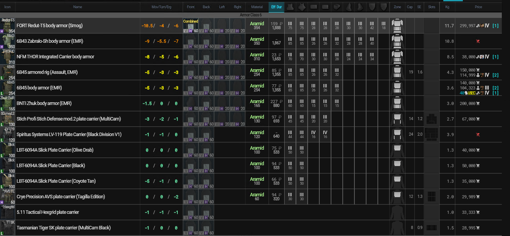
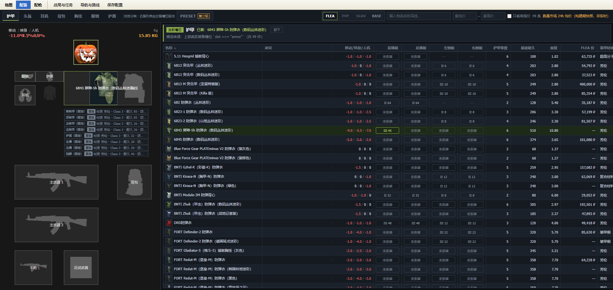
列序一致：移动 / 转身 / 人机 → 前·后·左·右四个板位 → 护甲等级 → 基础耐久 → 重量 → 价格 → 装甲材质 → 材料毁损系数 → 有效耐久 → 防护区域 → 钝击穿透 → 槽位 → 获取方式（最右）。 共 17 列，与参考图的列名与语义逐项对应；参考图里的 SE / a,½-Cap 派生列因上游无字段未实现（见第 12 节）。
9.2 护甲板安装弹窗
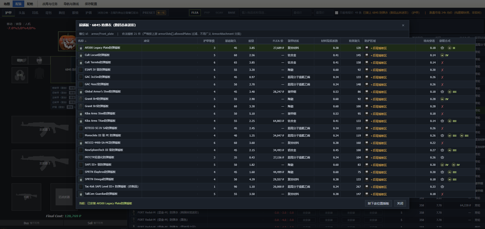
板位按参考图做成护甲表内的四列单元格；点击后弹出独立窗口，弹窗内列集与护甲表一致
（去掉四板位与槽位），并按上游 allowedPlates 过滤候选，不混入广义 ArmorAttachment。
安装后主表板位格变绿显示 III 45（见 key/04-护甲表四板位安装后.png）。
9.3 带附件槽的头盔（左置）
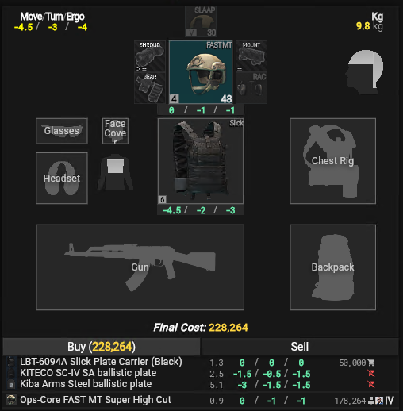
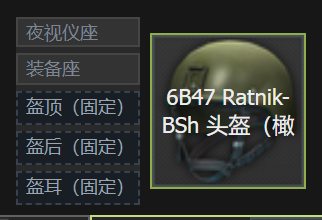
附件槽位于父装备左侧竖向排列，顺序紧跟卡片；固定内衬用虚线筹码同列展示且不可点击；
换无附件槽头盔后子槽数为 0，不显示虚构槽位（r5-08-helmet-no-attach.png）。
9.4 右侧头盔表
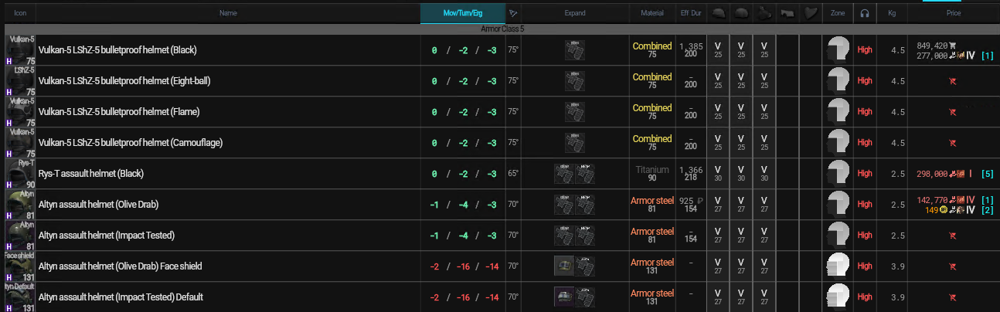

头盔表没有四个板位列，保留护甲等级 / 装甲材质 / 基础耐久 / 有效耐久 / 钝击 / 防护区域 / 槽位，与参考图一致。
9.5 右侧弹挂表
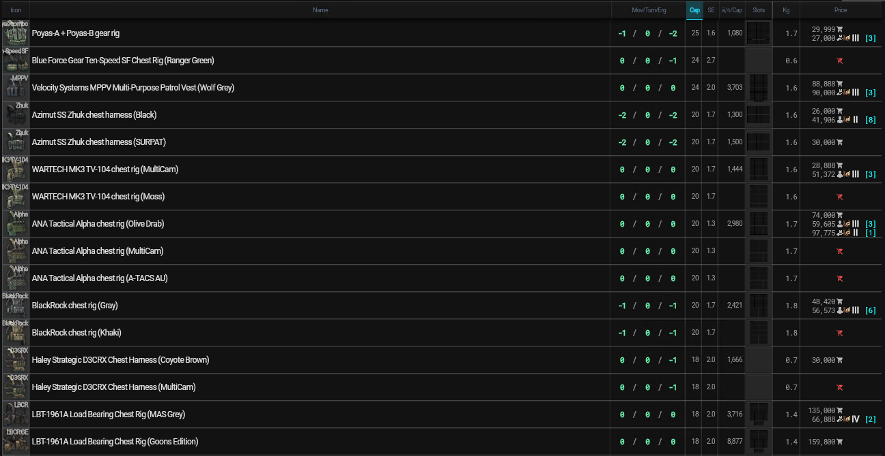

装甲弹挂按真实板位出状态；普通弹挂显示「不可用」，不伪造板位。
9.6 商人悬停浮窗

浮窗实测文案：Prapor LL1（I） · 解锁购买 / 价格：24,402 ₽（RUB）；
兑换类条目显示配方逐项与产出件数，任务解锁显示任务名，全部来自本地数据，无运行期网络请求。
9.7 最右侧获取方式列

获取方式列位于表格最右且唯一，图标化紧凑显示：跳蚤图标 / 商人缩写图标 + 罗马数字； 同一物品的跳蚤、购买、兑换三源全部并排显示，不合并、不截断。商人图标已全部换为项目内自绘 SVG。
9.8 手枪与近战分离后的左侧工作区
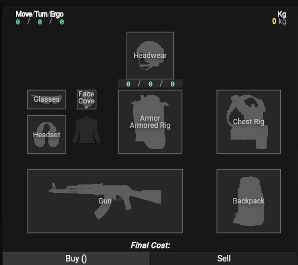
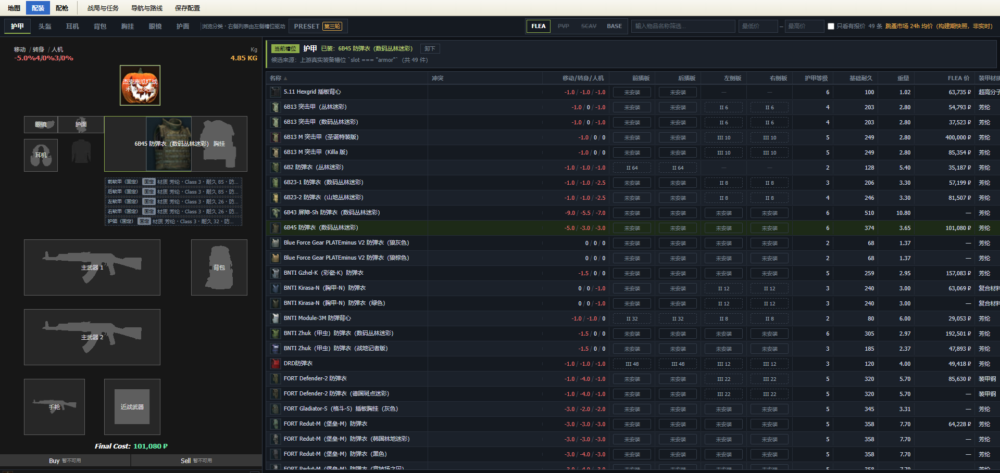
左栏宽度实测 504px，收敛为 --lw-side-w；手枪与近战是两张独立卡片，
中间留 37px 稳定空轨道，不共用连续边框（放大图 key/08b / key/08c）。
10. 验收截图（1920 × 909 真实浏览器）


armor/Front_plate，合法插板 21 件。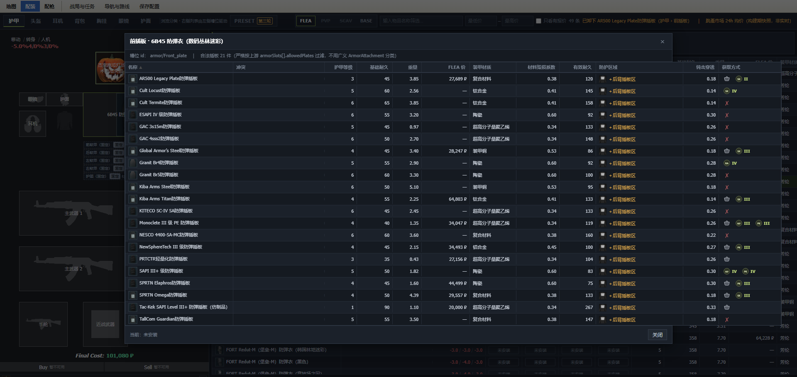
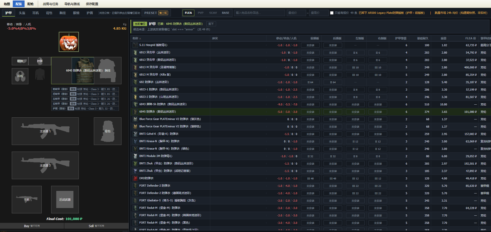
III 45，左栏重量 15.85 KG。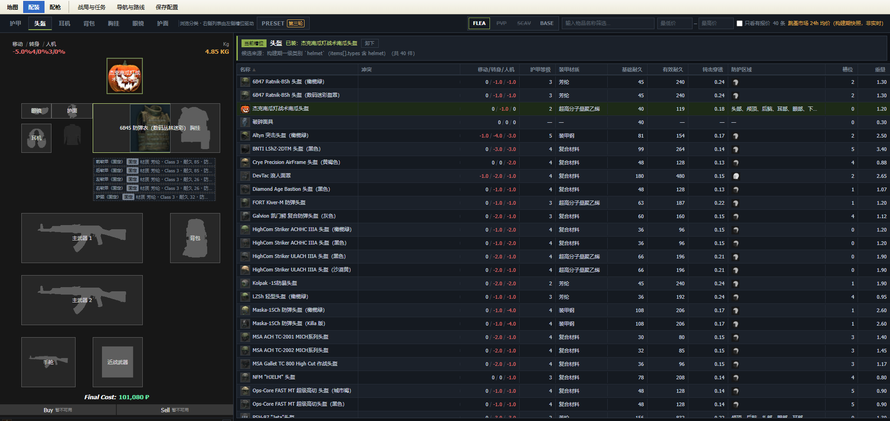
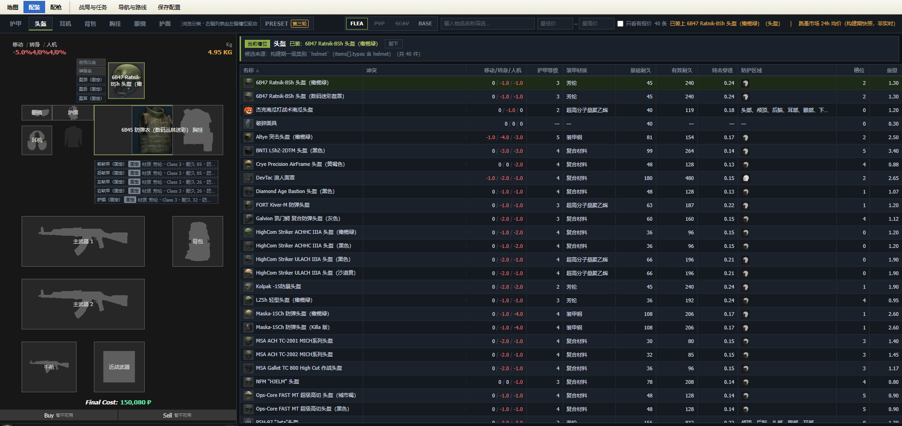

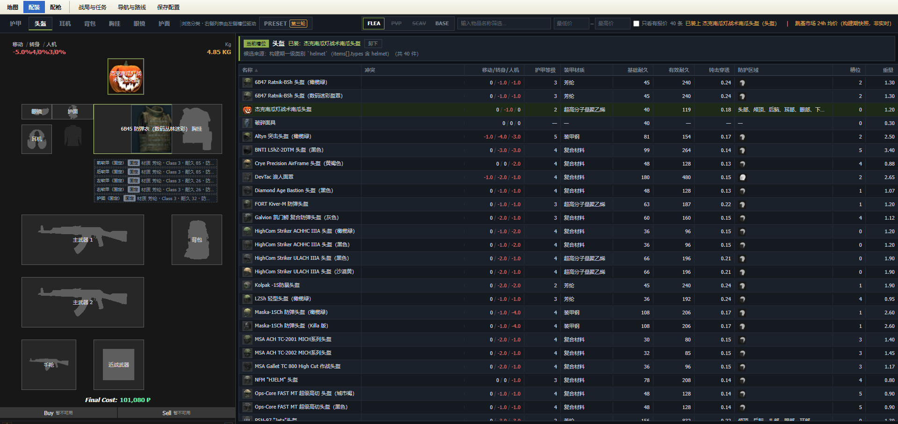
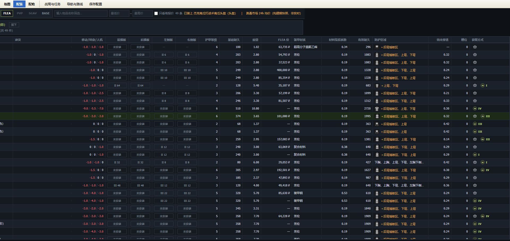

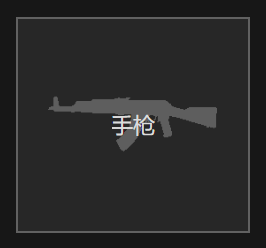
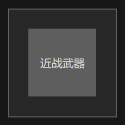
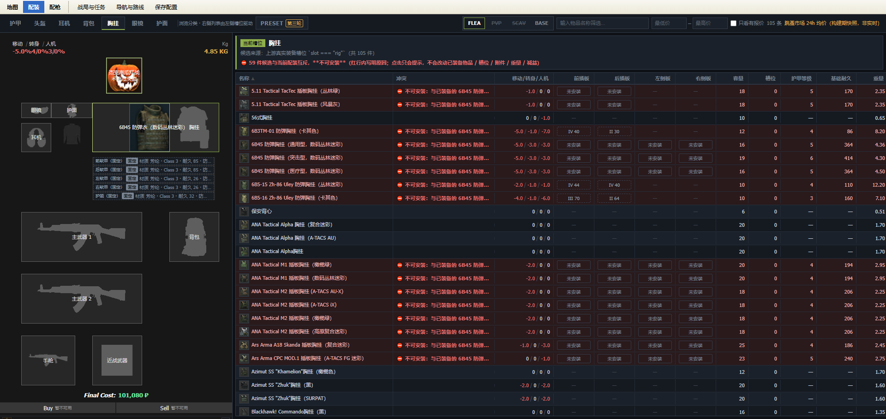
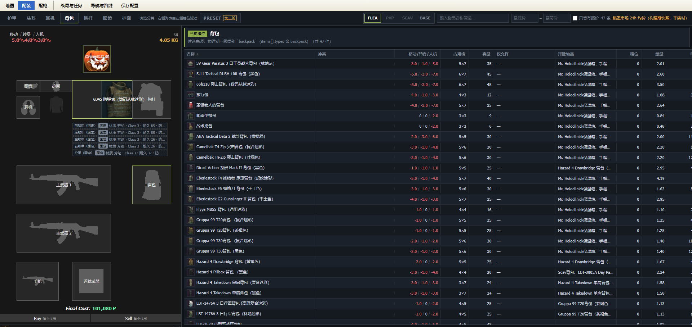
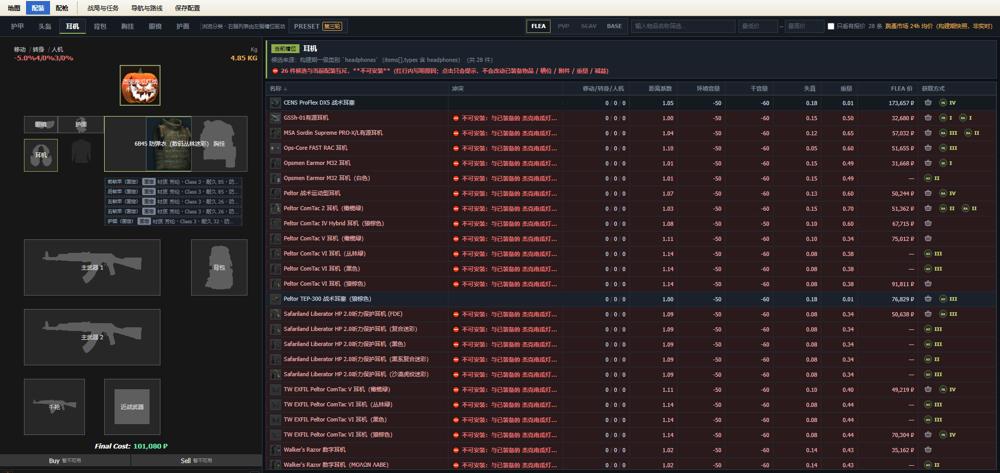
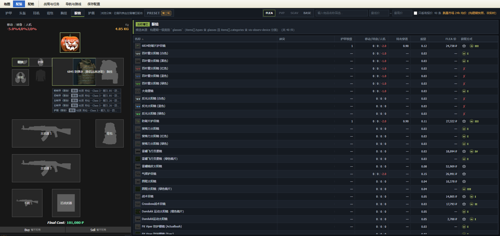
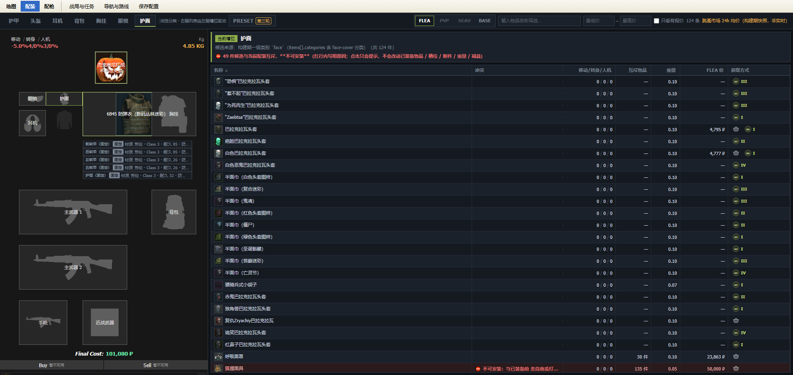
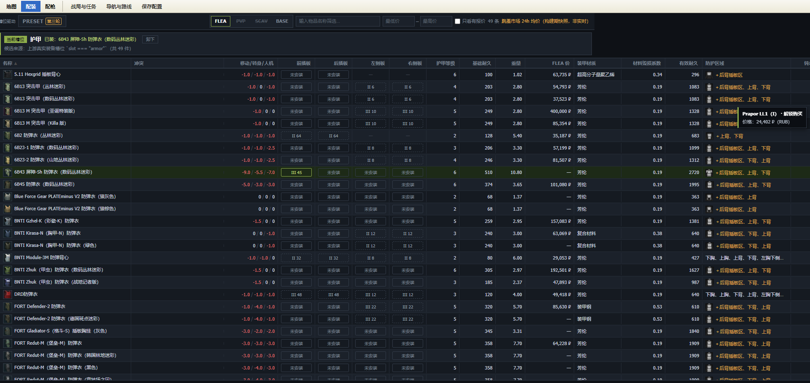
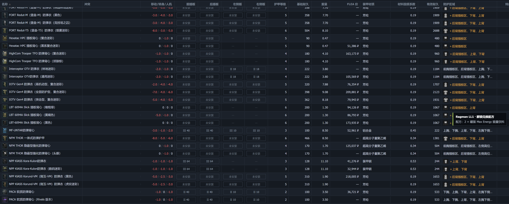
11. 浏览器交互实测
| 用例 | 操作 | 预期 | 实测 |
|---|---|---|---|
| 插板安装 | 护甲槽装 6B43 → 点前插板格 → 选 AR500 Legacy Plate | 板位变绿、价格/重量/有效耐久更新 | 通过（15.85 KG） |
| 换父护甲清理 | 已装前插板后换 6B2 防弹衣 | 旧插板键被清除 | 通过（loadout 仅剩 armor） |
| 无板位护甲 | 选中 6B2（固定内衬） | 板位显示 fixed，不可点 | 通过 |
| 头部附件左置 | 装 6B47 → 点附件槽 → 装 Peltor 转接座 | 子槽在左、安装后状态更新 | 通过 |
| 无附件头盔 | 换杰克南瓜灯头盔 | 子槽 0 个、旧附件清除 | 通过 |
| 多来源图标 | 选 MF-UNTAR 防弹背心行 | 三源并排、图片均成功加载 | 通过（3/3 loaded） |
| 悬停浮窗 | 悬停 Ragman 图标 | 显示 LL1 · 解锁兑换配方 + 配方 | 通过（浮窗在视口内） |
| 手枪/近战 | 量取两张卡片边界 | 独立卡片、稳定间距 | 通过（gap 37px） |
| 键盘可达 | 聚焦图标组后按 Enter | 唤出同一浮窗 | 通过（headless 无焦点窗口时由 keydown 兜底） |
12. 已知取舍（已确认，不是遗漏）
- 护甲表的 SE / a,½-Cap 派生列不实现：上游没有对应字段，不编造。
- 表头「Armor Class n」不做视觉分组，仅保留列名与悬停说明。
- 背包「仅允许 / 排除物品」只显示上游物品级限制，不含「某类物品」的推理规则。
- 参考图把 Price 与获取方式排在一起，本轮按用户第二节要求拆成独立价格列 + 最右独立获取方式列。
- 插板弹窗列集去掉四个板位列与槽位列（插板自身没有板位槽）。
- 335 件「确认可兑换但上游无配方」的物品显示「配方明细未确认」，不猜测配方。
- 枪械预设（主武器 1/2、手枪）本轮按用户要求只修布局，未接入预设选择。
13. 改动边界声明
- 未重写 app.js：仅在既有函数上增量修改（
gearColumns、gearRows、renderGearFigure、renderGearTree、equipItem、commitLoadoutChange等）。 - 新增样式全部作用域在
.loadout-workbench内；地图、侧栏、时间轴等全局样式零改动。 - 新增本地资源仅
assets/icons-traders/（18 个自绘 SVG + manifest，无第三方图片）；未引入运行期依赖。 - 许可复核改动只涉及
tools/fetch_data.py的图标生成、app.js的traderIconUrl、对应测试与本报告；未触碰地图与配装业务逻辑。 - 数据仅在构建期从既有上游（tarkov.dev）提取；运行期零网络请求，断网可用。